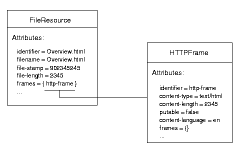

This document describe the format used by Jigsaw to store the resources
metadata. As of 2.1.0, Jigsaw use XML to store
these data. A JigXML file describes a set of resources metadata, each container
(eg: a directory) save its children's metadata in such a file (via the
ResourceStoreManager). It is assumed that you are familiar with the Jigsaw architecture.
Here is the structure of a resource and its frames:
And here is the corresponding JigXML structure:
<jigxml version="1.0" xmlns="http://jigsaw.w3.org/JigXML/JigXML1.0"> <resource class='org.w3c.tools.resources.FileResource'> <attribute name='identifier' flag='6' class='org.w3c.tools.resources.StringAttribute'>Overview.html</attribute> <resourcearray name='frames' class='org.w3c.tools.resources.FrameArrayAttribute' length='1'> <resource class='org.w3c.jigsaw.frames.HTTPFrame'> <attribute name='identifier' flag='6' class='org.w3c.tools.resources.StringAttribute'>http-frame</attribute> <resourcearray name='frames' class='org.w3c.tools.resources.FrameArrayAttribute' length='0'> </resourcearray> <attribute name='last-modified' flag='3' class='org.w3c.tools.resources.DateAttribute'>932126901168</attribute> <attribute name='oid' flag='1' class='org.w3c.tools.resources.IntegerAttribute'>@@NULL@@</attribute> <attribute name='quality' flag='2' class='org.w3c.tools.resources.DoubleAttribute'>1.0</attribute> <attribute name='title' flag='2' class='org.w3c.tools.resources.StringAttribute'>The release notes</attribute> <attribute name='content-language' flag='2' class='org.w3c.jigsaw.frames.LanguageAttribute'>en</attribute> <attribute name='content-encoding' flag='2' class='org.w3c.jigsaw.frames.EncodingAttribute'>@@NULL@@</attribute> <attribute name='content-type' flag='2' class='org.w3c.jigsaw.frames.MimeTypeAttribute'>text/html</attribute> <attribute name='content-length' flag='1' class='org.w3c.tools.resources.IntegerAttribute'>2345</attribute> <attribute name='icon' flag='2' class='org.w3c.tools.resources.StringAttribute'>text.gif</attribute> <attribute name='maxage' flag='2' class='org.w3c.tools.resources.LongAttribute'>@@NULL@@</attribute> <attribute name='send-md5' flag='2' class='org.w3c.tools.resources.BooleanAttribute'>false</attribute> <attribute name='allow-delete' flag='2' class='org.w3c.tools.resources.BooleanAttribute'>false</attribute> <attribute name='putable' flag='2' class='org.w3c.tools.resources.BooleanAttribute'>false</attribute> <attribute name='relocate' flag='2' class='org.w3c.tools.resources.BooleanAttribute'>true</attribute> <attribute name='index' flag='2' class='org.w3c.tools.resources.StringAttribute'>@@NULL@@</attribute> <attribute name='icondir' flag='2' class='org.w3c.tools.resources.StringAttribute'>/icons</attribute> <attribute name='browsable' flag='2' class='org.w3c.tools.resources.BooleanAttribute'>false</attribute> <attribute name='style-sheet-link' flag='2' class='org.w3c.tools.resources.StringAttribute'>/style/directory.css</attribute> </resource> </resourcearray> <attribute name='last-modified' flag='3' class='org.w3c.tools.resources.DateAttribute'>932126925406</attribute> <attribute name='oid' flag='1' class='org.w3c.tools.resources.IntegerAttribute'>2097344102</attribute> <attribute name='filename' flag='2' class='org.w3c.tools.resources.FilenameAttribute'>Overview.html</attribute> <attribute name='file-stamp' flag='1' class='org.w3c.tools.resources.DateAttribute'>922721334000</attribute> <attribute name='file-length' flag='1' class='org.w3c.tools.resources.IntegerAttribute'>2345</attribute> <attribute name='backup' flag='2' class='org.w3c.tools.resources.BooleanAttribute'>false</attribute> </resource> </jigxml>
This sample describe the metadata of only
one resource: "Overview.html". A resource is a set of attributes,
each attribute is described by an <attribute> tag. The frames
of a resource are described in a <resourcearray> tag, in this
example the resource has only one frame (an HTTPFrame), and this frame is
called "http-frame". A frame is a resource, so it's also a set of
attributes.
The usual resources are stored in a
repository (a file) located in the <INSTDIR>/Jigsaw/Jigsaw/config/stores directory. A
repository is used to store the children's configurations of one (and only
one) container (eg: DirectoryResource). For example, the children's
configurations of the root resource are stored in the file <INSTDIR>/Jigsaw/Jigsaw/config/stores/root.xml.
The associations between containers and
repositories are stored in the file stores/<server-name>-index.xml (eg:
http-server-index.xml). Each container has a key, the index file
stores the association between this key and the repository containing the
children's configurations.
Let me show you an example, in the description of the DirectoryResource (eg: images) you can read the following container key:
<resource class='org.w3c.jigsaw.resources.DirectoryResource'> <attribute name='identifier' flag='6' class='org.w3c.tools.resources.StringAttribute'>images</attribute> <resourcearray name='frames' class='org.w3c.tools.resources.FrameArrayAttribute' length='1'> <resource class='org.w3c.jigsaw.frames.HTTPFrame'> <attribute name='identifier' flag='6' class='org.w3c.tools.resources.StringAttribute'>frame-0</attribute> <resourcearray name='frames' class='org.w3c.tools.resources.FrameArrayAttribute' length='0'> </resourcearray> <attribute name='last-modified' flag='3' class='org.w3c.tools.resources.DateAttribute'>932127175430</attribute> <attribute name='oid' flag='1' class='org.w3c.tools.resources.IntegerAttribute'>@@NULL@@</attribute> <attribute name='quality' flag='2' class='org.w3c.tools.resources.DoubleAttribute'>1.0</attribute> <attribute name='title' flag='2' class='org.w3c.tools.resources.StringAttribute'>@@NULL@@</attribute> <attribute name='content-language' flag='2' class='org.w3c.jigsaw.frames.LanguageAttribute'>@@NULL@@</attribute> <attribute name='content-encoding' flag='2' class='org.w3c.jigsaw.frames.EncodingAttribute'>@@NULL@@</attribute> <attribute name='content-type' flag='2' class='org.w3c.jigsaw.frames.MimeTypeAttribute'>text/html</attribute> <attribute name='content-length' flag='1' class='org.w3c.tools.resources.IntegerAttribute'>@@NULL@@</attribute> <attribute name='icon' flag='2' class='org.w3c.tools.resources.StringAttribute'>dir.gif</attribute> <attribute name='maxage' flag='2' class='org.w3c.tools.resources.LongAttribute'>@@NULL@@</attribute> <attribute name='send-md5' flag='2' class='org.w3c.tools.resources.BooleanAttribute'>false</attribute> <attribute name='allow-delete' flag='2' class='org.w3c.tools.resources.BooleanAttribute'>false</attribute> <attribute name='putable' flag='2' class='org.w3c.tools.resources.BooleanAttribute'>false</attribute> <attribute name='relocate' flag='2' class='org.w3c.tools.resources.BooleanAttribute'>true</attribute> <attribute name='index' flag='2' class='org.w3c.tools.resources.StringAttribute'>Overview.html</attribute> <attribute name='icondir' flag='2' class='org.w3c.tools.resources.StringAttribute'>@@NULL@@</attribute> <attribute name='browsable' flag='2' class='org.w3c.tools.resources.BooleanAttribute'>false</attribute> <attribute name='style-sheet-link' flag='2' class='org.w3c.tools.resources.StringAttribute'>/style/directory.css</attribute> </resource> </resourcearray> <attribute name='last-modified' flag='3' class='org.w3c.tools.resources.DateAttribute'>932127175430</attribute> <attribute name='oid' flag='1' class='org.w3c.tools.resources.IntegerAttribute'>@@NULL@@</attribute> <attribute name='key' flag='1' class='org.w3c.tools.resources.IntegerAttribute'>83855963</attribute> <attribute name='dirstamp' flag='1' class='org.w3c.tools.resources.DateAttribute'>932031181000</attribute> <attribute name='indexer' flag='2' class='org.w3c.tools.resources.StringAttribute'>default</attribute> <attribute name='extensible' flag='2' class='org.w3c.tools.resources.BooleanAttribute'>true</attribute> <attribute name='negotiable' flag='2' class='org.w3c.tools.resources.BooleanAttribute'>false</attribute> </resource>
and you will find the corresponding repository in the file http-server-index.xml:
<resource class='org.w3c.tools.resources.store.NewStoreEntry'> <attribute name='repository' flag='4' class='org.w3c.tools.resources.StringAttribute'>6/st-6</attribute> <attribute name='key' flag='4' class='org.w3c.tools.resources.IntegerAttribute'>83855963</attribute> </resource>
So the children's configurations of the DirectoryResource images are stored in the
repository stores/6/st-6.
Specific resources like indexers and
realms are stored in two other
directories, <INSTDIR>/Jigsaw/Jigsaw/config/indexers and
<INSTDIR>/Jigsaw/Jigsaw/auth.
Note: You can find the dtd (document type definition) of the JigXML format at http://jigsaw.w3.org/JigXML/JigXML.dtd.
The new administration protocol use the XML serialiation.
Here is a sample request (add a DirectoryResource called "new" under docs_space, docs_space is an alias for the root resource).
REGISTER-RESOURCE /http-server/docs_space/ HTTP/1.1 Date: Tue, 10 Aug 1999 15:17:53 GMT Content-Length: 212 Content-Type: application/xml;type=jigsaw-config Accept: */* Host: ender.inria.fr:8009 User-Agent: Jigsaw/2.1.0 <?xml version='1.0' encoding='UTF-8'?> <jigxml version="1.0" xmlns="http://jigsaw.w3.org/JigXML/JigXML1.0"> <description class='org.w3c.tools.resources.DirectoryResource' name='new'> </description> </jigxml>
Another one (set the "putable" flag to true on the HTTPFrame of style):
SET-VALUES /http-server/docs_space/style?frame-0 HTTP/1.1 Date: Tue, 10 Aug 1999 15:15:06 GMT Content-Length: 994 Content-Type: application/xml;type=jigsaw-config Accept: */* Host: ender.inria.fr:8009 <?xml version='1.0' encoding='UTF-8'?> <jigxml version="1.0" xmlns="http://jigsaw.w3.org/JigXML/JigXML1.0"> <resource class='org.w3c.jigsaw.frames.HTTPFrame'> <inherit class='org.w3c.tools.resources.ProtocolFrame'> <inherit class='org.w3c.tools.resources.ResourceFrame'> <inherit class='org.w3c.tools.resources.FramedResource'> <inherit class='org.w3c.tools.resources.Resource'> <inherit class='org.w3c.tools.resources.AttributeHolder'> <inherit class='java.lang.Object'> </inherit> </inherit> </inherit> </inherit> </inherit> </inherit> <implements class='org.w3c.tools.resources.event.AttributeChangedListener'/> <implements class='org.w3c.tools.resources.event.FrameEventListener'/> <implements class='java.lang.Cloneable'/> <attribute name='putable' flag='2' class='org.w3c.tools.resources.BooleanAttribute'>true</attribute> </resource> </jigxml>
Just a little example of what can be done with JigXML and XSL. In this example, the JigXML file is transformed to an HTML file using the following XSL rules.